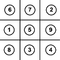

Professional Projects
Selenium Automated Regression Testing
Used the Selenium framework in Java to develop automated regression tests to be utilized during
point releases. I built these programs from the ground up to prevent the need for manual testers
to run regression tests before every point release. Several suites were implemented and put to
use in point releases now.
Encryption for Automated Test Account Information
Implementing light encryption program used to hide sensitive information stored about test user
accounts. This information could later be read and decrypted using a similarly designed program.
Academic Projects

Numerical Tic-Tac-Toe AI
Designed and built an AI to play the game of numerical tic-tac-toe against a human or another AI.
This AI was designed using a Monte Carlo simulation to analyze every possible game state and
determine which move would give the AI the most probable chance of winning. Because this AI
was designed to play perfectly, it is unable to lose and will only, at worst, draw.
Coin Counter
Designed an efficient program to determine the best way for an automated cashier to make
change based on the currencies currently available to the chashier.
Maze Runner
Created an AI that was able to find the exit to a maze while avoiding obstacles and traps
along the way.
Web Data Exploitations
Exploited flaws in web-based applications to gain access to information an attacker shouldn't
have. These exploits demonstrated the importances of ensuring developers create secure code and
to demonstrate how an attacker might try to gain access to information.